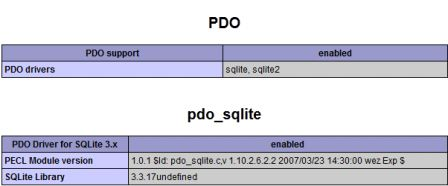
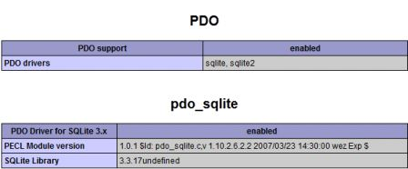
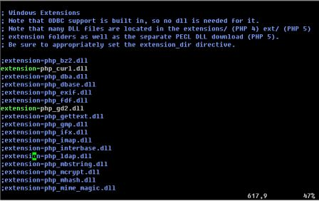
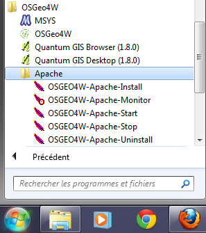
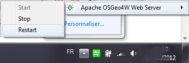

Installation de Lizmap sous Windows¶
Cette documentation présente le déroulement de l’installation de Lizmap Web Client sur un environnement Windows 7. Les autres versions de Windows ne devraient pas poser de problème. Afin de faciliter l’installation, nous utilisons le logiciel OSGeo4W, qui permet d’installer l’ensemble des composants nécessaires de manière centralisée.
Note
Dans ce document, nous utilisons la version 2.8.0 de Lizmap. Veuillez à adapter en fonction de la version que vous souhaitez installer (la dernière est recommandée)
Installation¶
- Télécharger OSGeo4W sur la page de téléchargement de QGIS
http://hub.qgis.org/projects/quantum-gis/wiki/DownloadFr#Installateur-R%C3%A9seau-OSGeo4W
- Lancer l’installateur OSGeo4W et choisir l’installation avancée

- Utiliser l’installation par internet

- Sélectionner la racine pour l’installation des éléments d’OSGeo4W et préférer l’option d’accessibilité à tous les utilisateurs
- Sélectionner la racine des paquets locaux

- Préciser le type de connexion internet (via un proxy ou non)
- Sélectionner dans ‘Desktop’ le paquet ‘QGIS-full’
- Sélectionner dans ‘Web’ le paquet ‘QGIS-server’
- Sélectioner dans ‘Lib’ le paquet ‘fcgi’

- Lancer et terminer l’installation
A cette étape tout ce qui est nécessaire à LizMap est installé sur votre machine. Les étapes suivantes consistent à configurer le serveur, installer LizMap et de configurer LizMap.
- Vérification d’Apache
Afin de vérifier que le serveur est bien installé ouvrir dans le navigateur l’adresse http://localhost
Si rien ne s’affiche c’est que l’installation n’a pas réussi.
- Vérification de PHP
Cliquer sur le lien ‘phpinfo’ de la page d’accueil du serveur apache d’OSGeo4W. Cette page permet de vérifier la configuration de votre serveur. Vous devriez y trouver des informations sur cgi-fcgi, PDO et PDO_sqlite mais pas sur CURL ni GD dont dépend LizMap.
 

- Activer CURL et GD2
Ouvrir le fichier C:OSGeo4WbinPHP.ini et dé-commenter l’extension curl et gd2
- Rédémarrer Apache
La modification du fichier C:OSGeo4WbinPHP.ini afin d’activer CURL et GD dans PHP, oblige à redémarrer le serveur apache. Pour ce faire,
cliquer dans le menu principal de windows sur le moniteur apache ‘Tous les programmes > OSGeo4W > Apache > OSGeo4W-Apache-Monitor’.
Cliquer sur le moniteur apache qui se trouve parmi les icônes cachées de la barre des tâches (en bas à droite) et sur ‘Restart’.

- Vérfier CURL et GD
Dans le navigateur web, recharger la page ‘phpinfo’. Vous devriez y trouver une section CURL et GD.

- Télécharger LizMap
Le code de Lizmap Web Client est libre et téléchargeable sur github. Pour télécharger la dernière version:
- allez sur https://github.com/3liz/lizmap-web-client/tags
- Cliquez sur le petit lien zip de la dernière version. Par exemple le lien suivant pour la 2.8.0 : https://github.com/3liz/lizmap-web-client/archive/2.8.0.zip
- Décompresser LizMap dans ‘C:OSGeo4Wapachehtdocslizmap’
Vous devez maintenant avoir un dossier ‘C:OSGeo4Wapachehtdocslizmaplizmap-web-client-2.8.0’
- Test l’installation de Lizmap
Tester si LizMap est bien installé en ouvrant dans le navigateur l’adresse http://localhost/lizmap/lizmap-web-client-2.8.0/lizmap/www. Vous devriez y voir s’afficher le projet “Montpellier” fourni avec LizMap et configurer pour être visible par tous. Pour pouvoir consulter les cartes, il va falloir configurer LizMap.
- Interface d’administration
Aller à l’adresse http://localhost/lizmap/lizmap-web-client-2.8.0/lizmap/www/admin.php et se connecter avec le login / mot de passe : ‘admin/admin’.
- Modifier l’URL de QGIS Server
- Cliquer sur ‘Configuration LizMap’ puis sur modifier dans la section Services afin de préciser l’url de votre QGIS-Server.
- Remplacer l’url du serveur WMS par http://127.0.0.1/qgis/qgis_mapserv.fcgi.exe et enregistrer :
- Vérification
Afin de s’assurer que la configuration a bien réussi, cliquer sur ‘Liste des projets’ en haut. Vous devriez avoir accès à deux cartes puisque vous êtes authentifié comme administrateur. Cliquer sur l’une des cartes. Si la configuration est bonne vous devriez visualiser la carte, et donc être en possession d’une version de LizMap prête pour vos cartes.
Ajouter le support spatiatlite au PHP¶
Pour pouvoir utiliser les annotations sur des couches spatiatlite, il faut ajouter l’extension spatialite dans PHP. Malheureusement, il faut une version de PHP au moins égale à la 5.3 pour le faire, et pour l’instant, l’installateur OSGeo4W ne propose que la 5.2.
Il n’est donc pas possible pour l’instant sous Windows d’utiliser des couches Spatialite pour l’annotation.
Lizmap Web Client teste si le support du spatialite est bien activé dans le PHP. S’il ne l’est pas, alors les couches Spatialite ne seront pas utilisables dans l’outil d’annotation. Vous pouvez toujours utiliser des données PostGreSQL à la place.